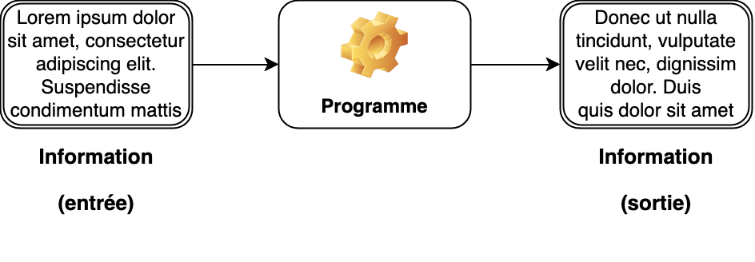
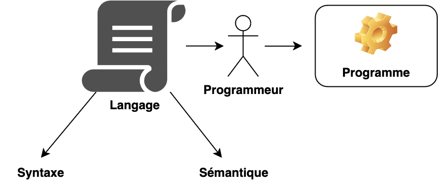
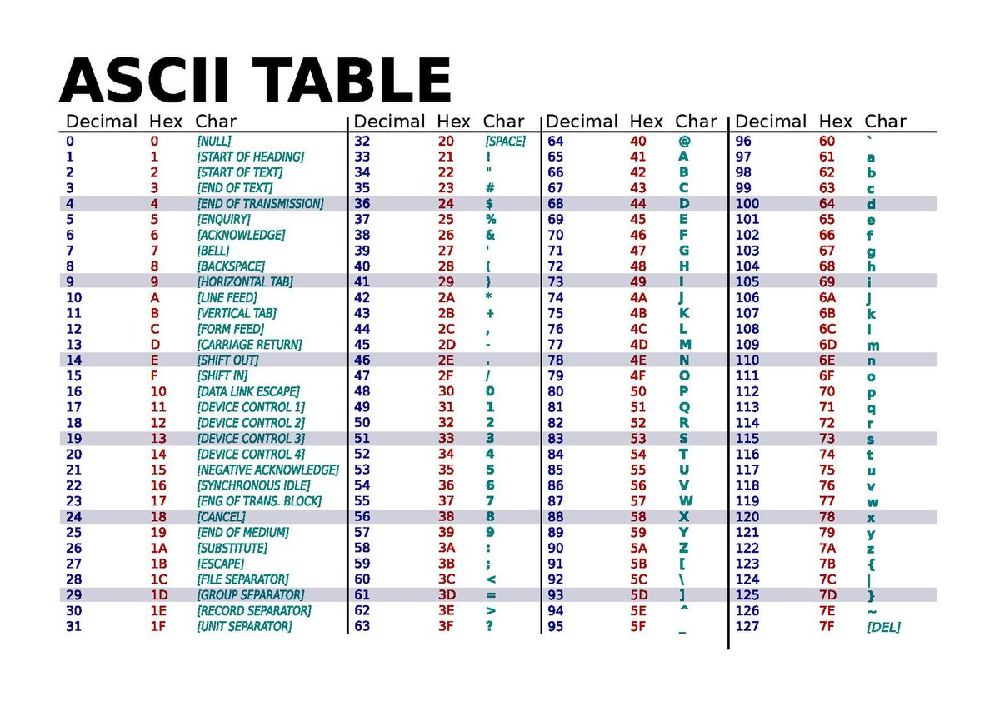

class: center, middle # Le traitement de l'information <img height="350px" src="img/data_processing.png"> --- ## Vous avez dit "Informatique" ? <div style="margin-bottom:150px;"></div> --- ## Vous avez dit "Information" ? Plusieurs définitions (selon le Robert) : * (Droit) Enquête pour établir la preuve d'une infraction, pour en découvrir les auteurs. *Ouvrir une information contre X.* * Renseignement (sur qqn, sur qqch.). *Des informations confidentielles.* * Action de s'informer. *Une réunion d'information.* * Renseignement ou évènement qu'on porte à la connaissance d'une personne, d'un public. * (Sciences) Ce qui peut être transmis par un signal ou une combinaison de signaux (message) selon un code commun et par un canal ; ce qui est transmis (objet de connaissance, de mémoire).*Traitement informatique de l'information.* --- ## Vous avez dit "Information" ? En informatique, l'information est considérée comme **une suite de symboles dénuée de sens**. L’ordinateur est une machine à traiter les informations. Cela se fait via un programme. <div style="margin-bottom:50px;"></div> <div style="text-align:center;"> <p></p> </div> --- ## Vous avez dit "Traitement" ? ### Traitement formel vs. informel Tâche : remplacer le point d’interrogation par une lettre : <span style="font-size:400%">CH?EN</span> <span style="font-size:400%">CH?T</span> <span style="font-size:200%">Il f?ut qu'on s? ret?ouve c?t apr?s-midi p?ur d?cider du pr?gramme.</span> <span style="font-size:200%; color:red;">→ Traitement informel</span> --- ## Vous avez dit "Traitement" ? ### Traitement formel vs. informel Tâche : remplacer le point d’interrogation par une lettre : <span style="font-size:400%">TB?AN</span> <span style="font-size:400%">ATY?T</span> <span style="font-size:200%">Gl?b za?tink plo?ves ke t?rnif so?vask.</span> <span style="font-size:200%; color:red;">→ Traitement formel</span> --- ## Vous avez dit "Traitement" ? Les traitements dont un ordinateur est capable sont limités aux traitement **purement formels**. Les ordinateurs manipulent l'information selon **des règles strictes et définies**, **sans interpréter** le sens ou le contexte de cette information. Pour qu'une information soit traitée par un ordinateur, elle doit être **convertie en une série de nombres entiers**, ce qui implique que tout ce qui est traité doit être formalisé de manière à être compris par la machine. Par exemple, un texte, une image ou un son doit être représenté sous forme numérique pour être manipulé par l'ordinateur. Les ordinateurs ne comprennent pas l'information de la même manière qu'un humain. Ils ne peuvent pas saisir les nuances, les émotions ou le contexte derrière les données qu'ils traitent. Par conséquent, le traitement de l'information par un ordinateur est essentiellement **un processus mécanique et algorithmique**, où les résultats dépendent entièrement des instructions programmées et des données fournies, sans place pour l'interprétation subjective. --- ## Exercice pratique : traitements formels et informels * Si on vous demande, à vous être humain, les anagrammes du mot CRANE, que proposerez vous comme réponse ? Que serait capable de faire un « ordinateur » face à la même situation ? * Dans un traitement sans intelligence artificielle, dans les énoncés suivants quels sont ceux qui sont faciles à formaliser ? Moyennement difficiles à formaliser ? pratiquement impossibles à formaliser ? Argumentez votre réponse. * Compter le nombre de formes verbales dans un document * Supprimer dans un document toutes les parties de texte entre parenthèses * Traduire une notice explicative * Trouver quel jour de la semaine est le 2 octobre sans avoir de calendrier sous la main * Remplir une grille de mots croisés si les définition sont fournies --- ## Traitement formel de l’information : idées maîtresses. * Pour être traitable par un ordinateur, toute information doit être numérisée. * Pour être possible, tout traitement d’une information par un « ordinateur » doit être décrit de manière purement formelle. * Ce n’est pas à l’ordinateur que l’utilisateur est confronté, mais au couple indissociable « ordinateur-logiciel » (« hardware-software »), un exécutant sans cesse en évolution au cours d’une même session de travail. --- ## Traitement formel de l’information : idées maîtresses L'ordinateur fonctionne avec un code binaire. C’est à dire qu’il ne supporte que deux symboles. Impossible donc pour eux d’encoder notre alphabet complet. Comment transformeriez-vous un message de votre langue (qui possède plus de 26 caractères et tous ses symboles) en une suite de deux symboles ? De quoi avez-vous besoin pour que cela soit compréhensible pour quelqu’un d’autre ? <span style="font-size:150%; color:red;">→ Utiliser un codage</span> --- ## La communication par code Quelques exemples de code : * **Code Morse** : utilisé pour la communication en envoyant des séquences de sons ou de signaux lumineux représentant des lettres et des chiffres. Par exemple, la lettre "A" est représentée par ".-" (un point suivi d'un tiret). * **Code Binaire** : le langage de base des ordinateurs, où chaque caractère est représenté par une séquence de 0 et de 1. Par exemple, la lettre "A" est codée en binaire comme "01000001". * **Codes-barres** : les codes-barres sont des représentations graphiques de données lisibles par machine, généralement utilisées pour identifier des produits, des articles ou des documents. Chaque code-barres est unique et contient des informations spécifiques codées sous forme de lignes et d'espaces parallèles de largeurs variables. --- ## La communication par code --- ## La communication par code <div style="margin-bottom:100px;"></div> <p></p> --- ## Syntaxe vs. Sémantique **La syntaxe** désigne les règles d'écriture d'un programme dans un langage de programmation, spécifiant comment les instructions doivent être formulées pour être valides Quelques exemples d'erreurs syntaxiques : * Oubli d'un point-virgule ```c void main(void) { int a = 5 // Erreur syntaxique return 0; } ``` * Parenthèses non appariées ```c void main(void) { if (a > 5 { // Erreur syntaxique printf("a est grand"); } return 0; } ``` --- ## Syntaxe vs. Sémantique **La sémantique** désigne la signification des instructions dans un programme, c'est-à-dire ce que ces instructions accomplissent lorsqu'elles sont exécutées. Quelques exemples d'erreurs sémantiques : * Utilisation d'une variable non initialisée ```c void main(void) { int a; printf("%d", a); // Erreur sémantique return 0; } ``` * Incompatibilité de type ```c void main(void) { int a = "Hello"; // Erreur sémantique return 0; } ``` --- ## Syntaxe vs. Sémantique : Kahoot --- ## Exercice pratique : la communication par code Par groupe de 2 : * Inventez un code * Codez une question type « Qui es-tu? », « D’où viens-tu ? » * Rédigez un mode d’emploi du code avec rigueur Contraintes : * Le message doit être transformé en x et □ * Les signes x et □ doivent se suivre sans aucun espace * Le message doit être accompagné d’un mode d’emploi pour permettre à un autre groupe de le déchiffrer * Le mode d’emploi doit être clair et complet * Le message doit contenir au moins deux espace et un point d’interrogation --- ## Exercice pratique : la communication par code * Parmi les messages et modes d’emploi réalisés, lesquels sont décryptables ? * Pour chaque message qui n’a pas pu être décrypté, indiquez ce qui a posé problème au décodage? Pourquoi cela vous a-t-il posé problème ? * Dans les messages décryptés, le sont-ils tous sans intelligence, sans supposition ? En d’autres termes, une machine (sans IA) pourrait-elle les décrypter ? Sinon, pourquoi ? --- ## La communication par code idéale Une suite d’un seul symbole offre 2 possibilités : -- x et □ Une suite de 2 symboles offre 4 possibilités : -- □ □, □ x, x □, x x Une suite de 3 symboles offre 8 possibilités : -- □ □ □, □ □ x, □ x □, □ x x, x □ □, x □ x, x x □, x x x <span style="color:red">Sachant qu'un langage est constitué de x symboles différents et que l'on dispose d'un espace de stockage permettant d'encoder une suite de n symboles, il est possible de représenter x<sup>n</sup>combinaisons différentes</span> <span style="color:green">Par exemple, un processeur 32 bits peut adresser jusqu'à 2<sup>32</sup> adresses mémoire, ce qui correspond à un maximum de 4 Go de RAM.</span> --- ## La table ASCII <p></p> --- ## Conclusion * Pour l'informatique, une information n'est qu'**une suite de symboles dénuée de sens** : c'est l'être humain qui lui donne une signification. * L'ordinateur n'est capable que de **traitements formels** : il applique des règles strictes, sans jamais interpréter le sens ni le contexte. * Toute information doit donc être **numérisée**, et tout traitement doit être **décrit de manière purement formelle** pour être exécutable. * Passer d'une information à une suite de symboles se fait grâce à **un code** (Morse, binaire, codes-barres, ASCII...), qui n'est utilisable que s'il est accompagné d'**un mode d'emploi rigoureux et sans ambiguïté**. * Un code doit respecter **une syntaxe** (les règles d'écriture) pour porter **une sémantique** (la signification) : une erreur de syntaxe empêche la lecture, une erreur de sémantique fausse le résultat. * Avec x symboles différents et un espace de n positions, on peut représenter **x<sup>n</sup> combinaisons** : la capacité de stockage détermine directement la quantité d'information représentable. --- ## Sources des images * https://e7.pngegg.com/pngimages/953/956/png-clipart-computer-icons-data-processing-symbol-binary-file-binary-miscellaneous-text.png